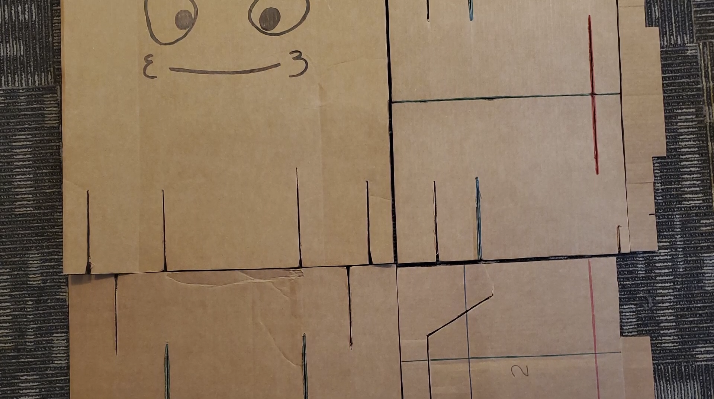
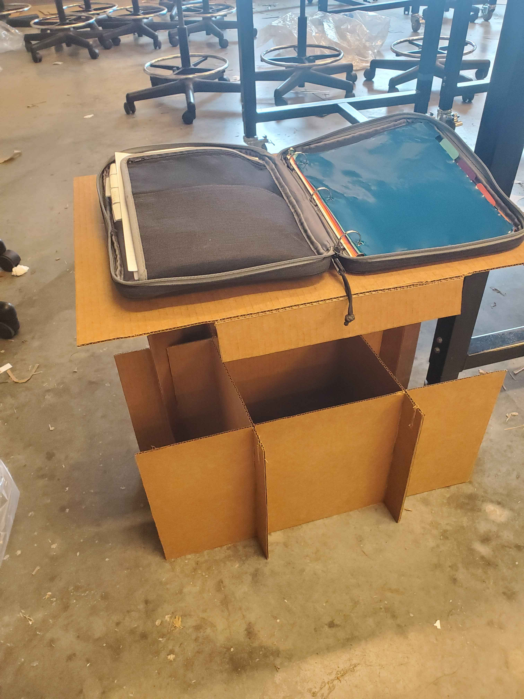
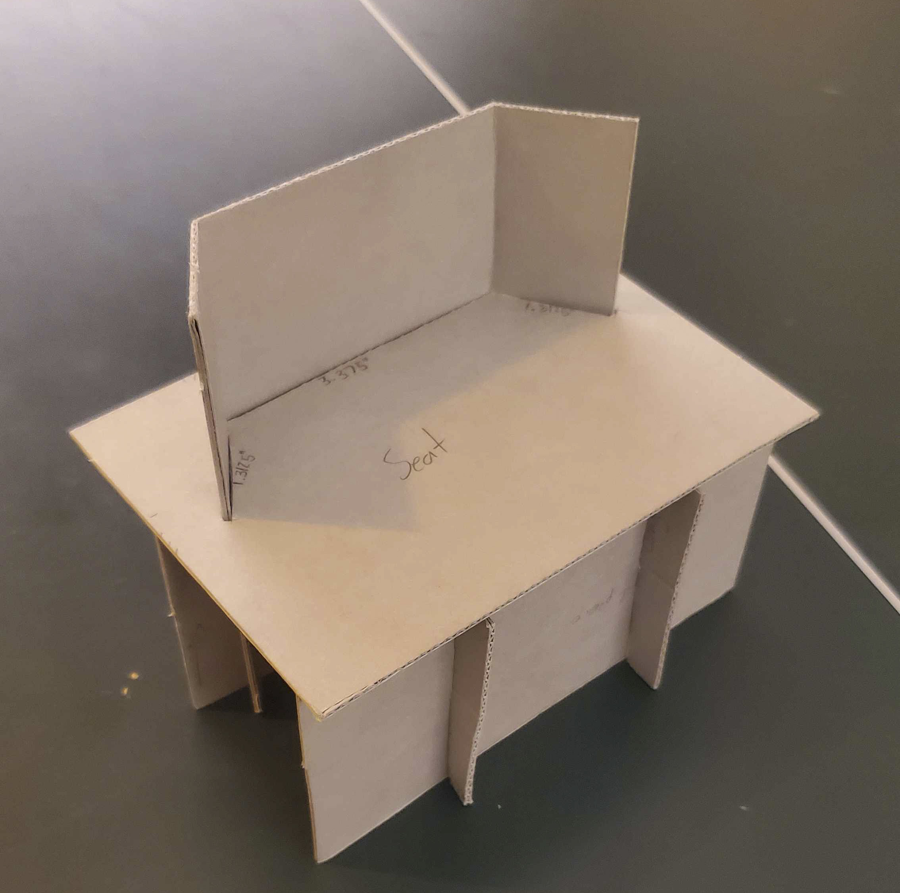
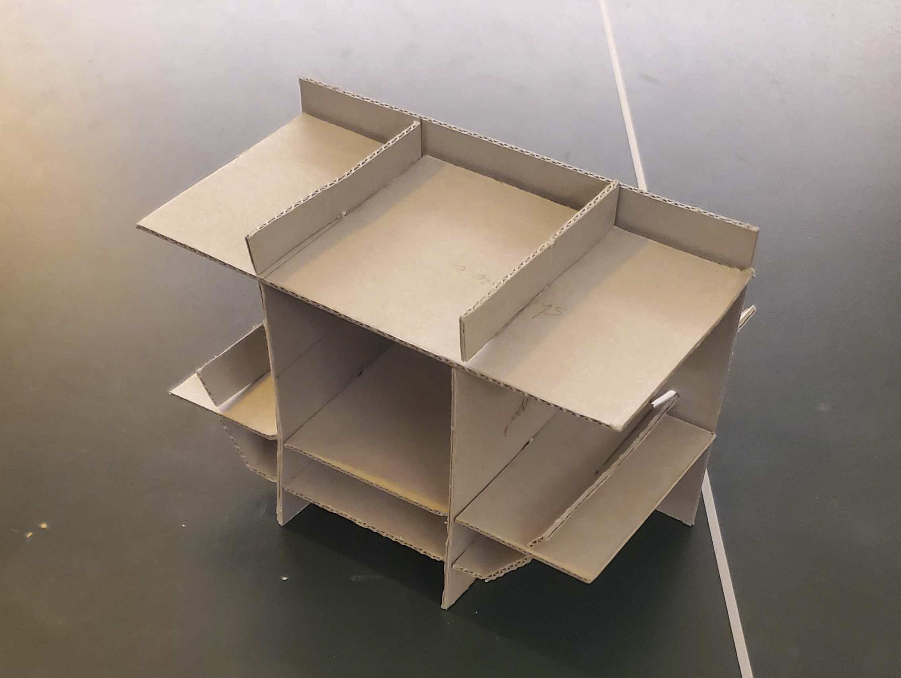

Overview
With my team of five people, I designed a chair made entirely of cardboard for use in emergency/disaster shelters, as part of the APSC100 course at UBC. The chair had to be made entirely from a 4x4ft piece of cardboard, it needed to be easy to quickly assemble, withstand the weight of a person, as well as fulfill minimum seat size, height of the ground, and storage volume requirements.
Our Chair
Our chair design, called "chip", placed first in the competition, withstanding over 240lbs of weight, and passing all the requirements. Our chair also had a firm backrest and the capability of turning into a makeshift table by raising the seat board.


Process
The majority of this project's work was in prototyping, which was convenient since cardboard is relatively easy to prototype with. The most important design aspect of the project was a sturdy base to support the maximum possible weight. We came up with the idea of our grid structure quite early, and after testing, it proved to be optimal due to its stability and ease of assembly.
Early prototype:


This project involved lots of practical risk analysis and troubleshooting. Oftentimes a design would seem good on paper, but we would run into problems when actually constructing it, costing us time and effort. Which is why a big emphasis was placed on thoroughly analyzing the design and searching for potential flaws during the designing phase, and coming up with solutions when flaws were found. This approach paid off, as our chair had practically no unexpected problems by competition day, since we had accounted for all probable risks early on.